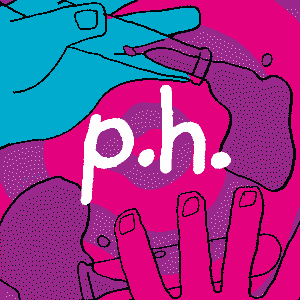

the time machine school - kinoue64
type: album
genres: shoegaze, indie rock
date released: 9 march 2024
i think it was cute! thought most of these songs didn't leave such a strong impression on me as past kinoue64 releases.... but i guess that's to be expected. with that said i did enjoy a few of these!
this is also (to my knowledge) the first release where they use their voice instead of using miku! which honestly i did not expect since this released on miku day (march 9th) but it was a very welcome and pleasant surprise! i like their voice a ton.
links: bandcamp
highlights: computer girl, seconds after flying, now , create
rating: 


listened on 11.mar.24, published 17.mar.24
p.h. - seventhlinks
type: single
genres: jpop
date released: 29 may 2020
i downloaded project sekai .... again prsk log soon maybe? because they recently added not 1 but 3 siinamota songs!!!! so of course i downloaded it again to play them and of course i am once again hooked on this little rhythm gacha game
BUT because of that i found this song and oh my god?!?!?! this is an instant hit
links: youtube MV, spotify
rating: 
listened on 11.mar.24, published 17.mar.24
worm in the apple - youra
type: single
genres: alt r&b
date released: 27 january 2024
cat in the album cover #yas
this song is so catchy btw. everything youra has ever put out is so interesting to me tbh!!! i really lovve her style so much
links: youtube MV, spotify
rating:
listened on 29.feb.24, published 17.mar.24
am i sinking or am i swimming? - late night drive home
type: EP
genres: indie rock
date released: 17 september 2021
i've been an enjoyer of stress relief for the past 3 years or so, so i thought it was about time i checked out the EP that it came from!
this was a very pleasant listening experience :) it's been SUCH a long ass time since i've heard some random ass indie rock release... i really really missed this sound so much not that it has gone anywhere but i personally have been listening to it less and less over the years.
it's pretty hard for any song in here to surpass stress relief because of my extreme bias to it, but still, i found this EP to be quite lovely. i even find it a bit nostalgic...
highlights: stress relief, euphoria, nostalgic love rock
rating: 
listened on 18.feb.24, published 17.mar.24
나는야 찌질이 (i'm a loser) - hongbi
type: EP
genres: indie pop
date released: 30 january 2022
an EP i found through koreanindie like 2 years ago?? that i've been meaning to listen to. i scrolled to the bottom of my spotify saved albums (which are my to-listen-later's btw) and found this one. AGAIN. i decided to git it a go since it's pretty short and i just felt in love.
what a charming little EP, it felt like i was in a dream. the instrumentals and vocals are very simple and yet it's so lovely. i really enjoyed this
links: spotify
highlights: 뚜루ㅜ루~, ddo TAT
rating: 
listened on 19.feb.24, published 24.feb.24
changes to listening log format!
as i have talked about on a recent journal log, i will be changing up how i do these listening log since i simply won't have the time to do them on a monthly basis anymore because of uni and all of that. i figured i could do them with seasons instead! and hopefully i can keep making these once every month or so!
published 24.feb.24